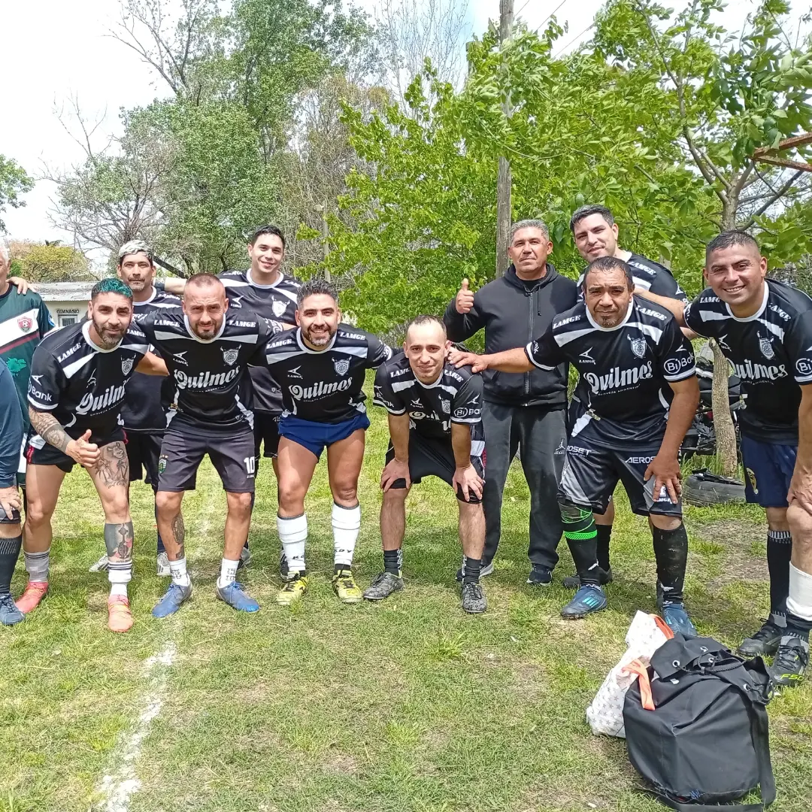

Don Orione · Claypole
Club AtléticoMonteverde
Fútbol 11 masculino y femenino. Garra, pasión y barrio. Acá no se viene solo a jugar: más que un club, una familia.
 Don Orione te espera
Don Orione te espera
Novedad · Lunes 9 de noviembre
¡Bienvenido, León, a Don Orione!
Este lunes el Papa León XIV llega al Pequeño Cottolengo Don Orione de Claypole, la casa que todos los días cuida con amor a más de 400 personas con discapacidad. Es un día histórico para nuestro barrio.
Desde el Club Atlético Monteverde nos sumamos a la alegría de toda la comunidad. Que esta visita nos encuentre como en la cancha: todos juntos, como una familia. 💚🖤🤍
0días
00horas
00min
00seg
- Llegada al CottolengoLunes 9 de noviembre · 9:15 h
- Posta del EncuentroParque Don Orione, con pantallas gigantes · entrada libre
- Tené en cuentaHabrá cortes de tránsito en la zona. El ingreso al Cottolengo no es masivo: la Obra invita a acompañar con la oración y por sus redes.
0Fútbol 11
0Planteles
0Penales atajados en semis
0Final de la Copa



Domingos en la cancha
Torneo Senior +35
Seis equipos, entrada gratuita y todos los partidos en vivo por YouTube.
10 HSPrimer partido
11 HSSegundo partido
12 HSTercer partido

Ponete la
camiseta
¿Querés jugar en Monteverde o que tu hijo o hija se sume a alguna categoría? Escribinos y te contamos todo. Las puertas del club están abiertas.
Escribinos por Instagram